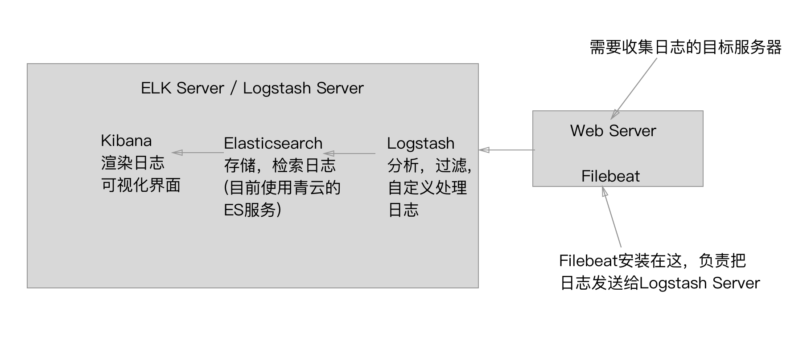

使用 ELK stack 分析 Ruby On Rails 日志
ELK Stack
ELK Stack 是 Elasticsearch、Logstash、Kibana 三个开源软件的组合。在实时数据检索和分析场合，三者通常是配合共用，而且又都先后归于 Elastic.co 公司名下，故有此简称。
ELK Stack官方指南 在最近两年迅速崛起，成为机器数据分析，或者说实时日志处理领域，开源界的第一选择.
工作流程：
在需要收集日志的所有服务器上安装 Filebeat, (Filebeat 是基于原先 logstash-forwarder 的源码改造出来的。 换句话说：Filebeat 就是新版的 logstash-forwarder，也是 ELK Stack 在 shipper 端的第一选择。), Filebeat 负责将日志发送给 Logstash Server 端(使用 lumberjack 网络协议), Logstash 接收到日志后，对日志进行分析，过滤 然后交给 ElasticSearch, 我们可以通过 Elasticsearch 对日志进行检索，同时 Kibana 会将日志可视化，生成友好的 Web 界面.
